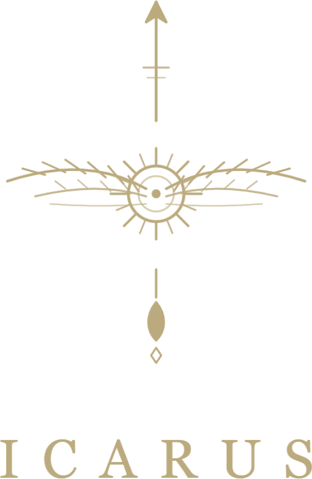
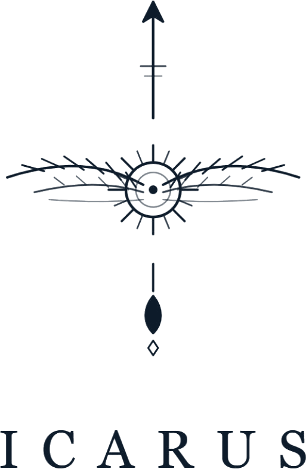

Um fluxo só. Uma ideia para conversar, não um escopo fechado.
Em fevereiro, desenhei um primeiro fluxo de CRM para a Unique. Esta é a mesma ideia, revista e ampliada.
Ampliar o uso do ClickUp para além do que já rodava, com o projeto inteiro visível num lugar só.
O que chega no CRM se conecta ao ClickUp. Quando um cliente fecha, o projeto nasce pronto para ser acompanhado.
Um atendimento inteligente que integrasse tudo, do primeiro contato ao acompanhamento do projeto.
Um mapa para conversar. Parte disso pode já existir. Parte pode ter mudado. Nenhuma etapa aqui é obrigatória e nenhuma ferramenta está decidida.
Não é escopo, não é cronograma e não é orçamento. Esses três saem da conversa, depois de entender o que já roda hoje.
Site, tráfego e redes seguem como estão. O fluxo começa no momento em que alguém chama a Unique e termina com o projeto acompanhado até a operação.
Primeiro entender o que existe. Depois desenhar o que falta.
Seis perguntas. As respostas definem o tamanho certo do fluxo.
| Área | Pergunta | Por que importa | |
|---|---|---|---|
| 01 | Entrada | Por onde os contatos chegam hoje? WhatsApp, formulário, Instagram, indicação? | Define onde a IA entra e o que precisa ser centralizado. |
| 02 | Qualificação | Quem responde, em quanto tempo, e como separa investidor, empresa e assinatura? | Cada perfil tem um caminho e uma pergunta de abertura diferente. |
| 03 | CRM | Qual CRM está em uso, quais etapas existem e o que acontece quando um negócio fecha? | É a ponte entre comercial e projeto. Se ela já existe, a gente só ajusta. |
| 04 | ClickUp | O que roda no ClickUp hoje? Só projetos, ou também comercial? Existe template por tipo de usina? | Evita refazer o que funciona e mostra onde a automação encaixa. |
| 05 | Projeto | Quais são as fases reais de uma usina, da análise à operação, e quem responde por cada uma? | O template do projeto precisa espelhar a obra, e não o contrário. |
| 06 | Cliente | Como o cliente acompanha o andamento hoje? Por onde recebe status e documentos? | Acompanhamento claro reduz cobrança, retrabalho e ansiedade do investidor. |
Dá para responder em 30 minutos, por aqui ou numa ligação. Não precisa preparar nada. O que você não souber de cabeça, a gente confirma depois.
Um desenho do fluxo com as ferramentas que vocês já usam, as fases reais do projeto e a ordem de entrada de cada camada.
Do contato ao projeto entregue, sem trocar de sistema no meio do caminho.
Todo contato num lugar só. WhatsApp, formulário, Instagram e indicação caem no mesmo fluxo, com origem registrada.
Responde em minutos, a qualquer hora, com o tom da Unique. Entende se é investidor, empresa ou assinatura. Coleta o básico, agenda e passa para uma pessoa quando o assunto pede.
O contato nasce qualificado e na etapa certa, com o resumo da conversa. Follow-up automático até a decisão. Nada fica sem resposta.
Proposta aceita vira gatilho. O projeto é criado no ClickUp a partir de um template, com fases, prazos, responsáveis e dependências já no lugar.
O time conduz a obra no ClickUp. Riscos, marcos e dependências visíveis. Você enxerga o portfólio inteiro numa tela, sem pedir relatório.
O cliente recebe status e documentos a cada marco, sem precisar cobrar. Depois da entrega, o relacionamento continua: operação, assinatura e indicação.
Quem foi bem atendido indica. E o fluxo recomeça.
Ordem sugerida, não obrigatória. Cada uma funciona sozinha e ganha força com as outras.
As camadas 01, 02 e 05 são a Operação Comercial Inteligente: agente de IA no WhatsApp, integração com CRM, qualificação automática, agenda, follow-up, transferência para atendimento humano e painel com histórico. As camadas 03 e 04 são a ampliação pensada para a Unique: o projeto acompanhado no ClickUp e o cliente informado até a operação.
Cenário ilustrativo. Os nomes, as fases e os prazos reais saem da conversa.
Um diretor de operações de uma rede de varejo chama no WhatsApp depois de ver um post. O agente responde em segundos, entende o perfil, pergunta sobre consumo e unidades e oferece um horário para conversar.
O contato já está no CRM, na etapa Diagnóstico agendado, com o resumo da conversa. O time da Unique recebe o aviso e entra na reunião sabendo o contexto.
Proposta enviada pelo CRM. Follow-up automático em intervalos combinados, com o tom da Unique, até a resposta. Se o cliente responder, uma pessoa assume.
Proposta aceita. O negócio muda de etapa e o ClickUp cria o projeto a partir do template: fases, prazos, responsáveis e dependências. Ninguém cadastra nada de novo.
O cliente recebe o status por WhatsApp a cada marco: análise, projeto, homologação, obra, comissionamento. Sem precisar perguntar. O time trabalha no ClickUp e o cliente vê o resultado.
Usina em operação. O fluxo pergunta como foi a experiência, entrega os documentos finais e abre espaço para indicação.
Cada passo acima é um ponto de ajuste. O que a Unique já faz bem continua. O fluxo só tira o que estava no caminho.
Uma conversa, um desenho ajustado, uma camada para começar.
Por aqui ou numa ligação. Respondemos as seis perguntas da Leitura e eu entendo o que já roda hoje.
Em até uma semana depois da conversa, volto com o desenho real: ferramentas, fases do projeto e o que já existe.
Escolhemos a que resolve a dor mais cara hoje. Pouco feito vale mais que muito planejado.
Sem número neste documento, de propósito. O investimento depende do que já existe e de por onde começamos. Esse ajuste a gente faz na conversa, com o fluxo na mesa.
Você acompanhou de perto como eu conduzo projeto. ClickUp, automação e integração fazem parte do meu dia a dia. A diferença agora é o foco: só a operação da Unique.

Pouco feito vale mais que muito planejado.